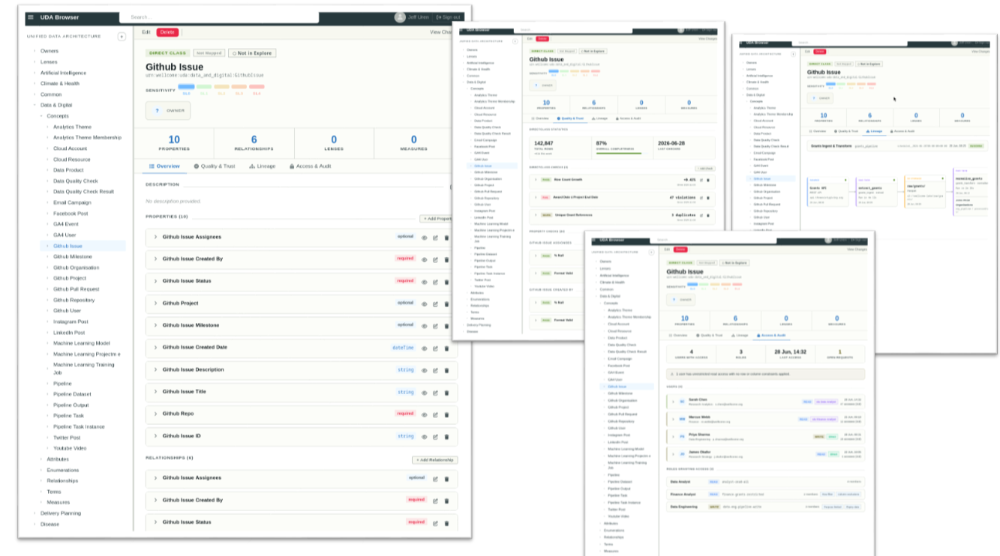
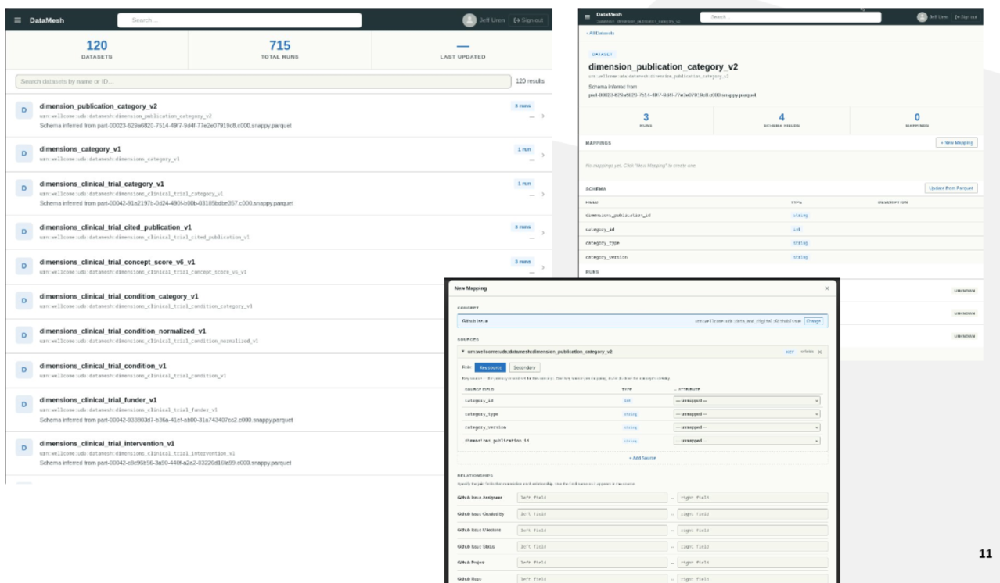
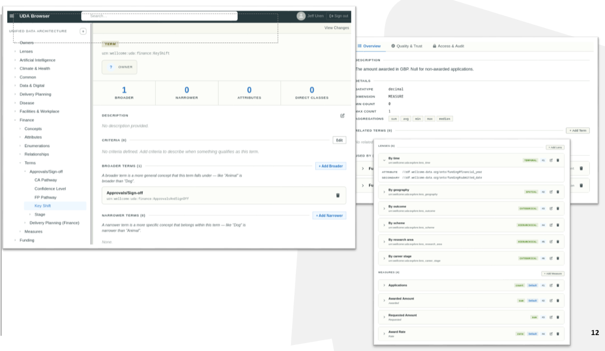
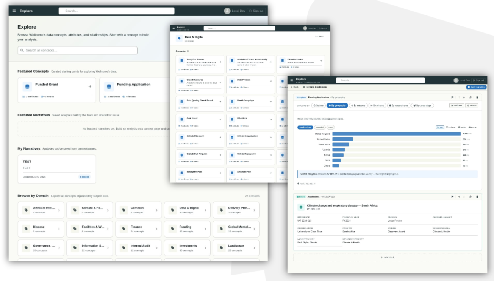
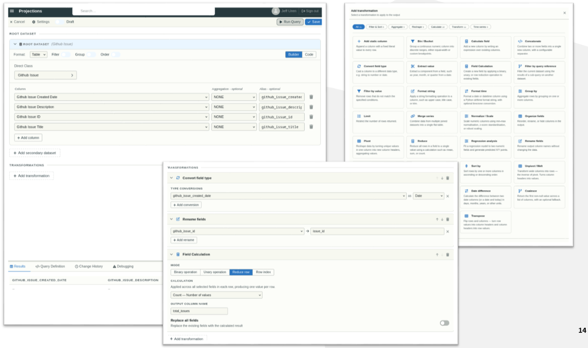
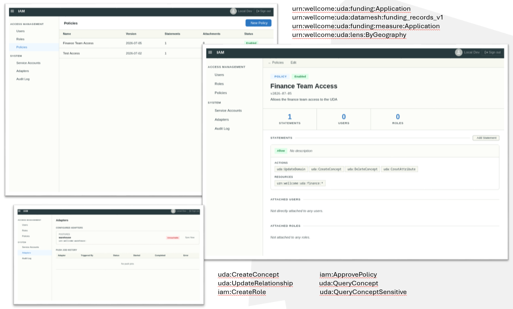

Part 5: Bringing It to People
Jeff Uren ★ 2026-08-15
This is the fifth article in a series about building a shared understanding of data, ontologies, and data architecture (UDA) in a large organisation that struggles with meaning.
Throughout these articles I've spent a lot of time talking about concepts, semantics, mappings, projections and graphs. That's all well and good, but none of it matters if people can't actually use it.
"The purpose of abstraction is not to be vague, but to create a new semantic level in which one can be absolutely precise."
One of our goals from the very beginning wasn't just to build an ontology, it was to build an environment where analysts, engineers, architects, and domain experts could work with organisationa meaning as naturally as developers work with source code.
The UDA was never really the destination we were heading for here, it's just a bit of foundational modeling, that allows us to build really cool things on top of it.
The UDA Browser
The first tool we built was the UDA Browser, a web application that allows people to explore the UDA and contribute to it. Meaning is spread across so many places in an organisation, and the UDA is a way to bring it all together.

Meaning has to be driven by consensus, and where there's disagreement about what something means, we need to drive that disagreement out into the open, and push it towards a resolution. The UDA Browser allows people to do that.
It acts as the Codex of what's important to the organisation, and the main point that everything else hangs off of.
Not only that, it acts as a jumping off point for other tools, and a central place to view extended information about the concepts in the UDA, their propagated properties, and things like Data Quality & Trust, lineage, and permissions.
DataMesh Application
Next, to represent the lower levels of the our ontology, we built a tool called the DataMesh app.

This tools predominantly targeted at our Data Engineering and Infrastructure team, when new meaning is added to the UDA by people across the organisation, or upstream systems change, it gives our engineering resource a way to rapidly update the mappings which link the meaning in the UDA to the recorded values.
Lenses & Measures
We extended our UDA ontology to incorporate four additional concepts: Lenses, Measures, LenseBindings, and MeasureBindings.
These codify how concepts can be "sliced", and how we calculate specific metrics across the concepts in the UDA system, allowing us to build a library of reusable metrics that can be utilized to perform analysis without needing to know how to calcualte them from the lower level sources.

Explore
Because we codify the meaning of the organisation, the measures, lenses, and other metadata like disambiguation rules, caveats, annotations and lineage, we can build tools that allow people to explore the organisation in a way that wasn't possible before.

Users can rapidly build up their own analysis, using agreed measure, metrics and meaning. Safely, without needing to know the underlying data sources, or how to calculate specific metrics, and all the extended meaning from th UDA is at their fingertips including disambiguation rules, caveats, definitions, annotations, and everything they need.
Projection Editor
Our projection editor, which is still in the early stages of development, allows people to step beyond the constraints of the Explore application and start to create outputs that are more tailored to their needs.
Users can build APIs, data marts, warehouse tables, exports, reports, all from the same underlying, consensus-driven meaning. There's a lot of work here to do still, but we're excited about the potential of this tool, and the possibilities it opens up for people to operationalize the UDA in their own work.

IAM Permissions
Across all of this, permissions are baked in, the UDA URN addressing system lends itself heavily towards an IAM, RBAC and policy-drive permissions model really well. We can control a user or services access to specific concepts, including operations within the uda based on individual actions.

These are just highlights
These aren't exhaustive lists of the tools we've built, there are a number of other applications which are in the early stages of coming together. The wonderful thing about the UDA is that once you codify things this way, the use-cases sort of just "fall out" of the system, and building them (with a little bit of architectural prowess) is relatively straightforward and in some instances fairly trivial.
Some of the other user-oriented apps ruminating or in spiking:
- Dashboarding and Reporting tools that preserve meaning
- Data Quality and Quality reporting application
- Auditing and Access Analysis application
- UDA Integrity App (show us where we're missing mappings, descriptions)
In terms of applications, we're targeting the base-cases at the moment, the things we know that we need to operationalize the system and to bring people into it. Once we've addressed those cases, we can start to explore the more interesting and complex use-cases, start to challenge old assumptions about what insights are, the old mode dashboard paradigm, and start to build newer ways of exploring and understanding the organisation, and the data that represents it.
Beyond that, there are a whole host of lower-level components and services that make all of this possible.
Finally (you've almost made it), one piece that we're really interested in exploring is one that was mentioned in the previous article, the Organisational Data Graph. There's a high amount of potential there, and we'll dive a bit into that in the next and final article.